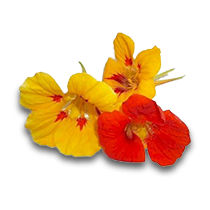

Um convite para conhecer mais sobre a natureza que nos rodeia!
Biodiversidade, PANC e Alimentação

Você sabia que consumimos apenas 0,13% da diversidade de mais de 75 mil espécies de plantas que são comestíveis no planeta? (Fonte)
Mato pra que? é uma proposta de educação ambiental para fortalecer as conexões entre as pessoas, a alimentação e a natureza. Um olhar desatento pode achar que é tudo mato, mas na realidade, essas plantas têm grande valor social, cultural e alimentar. Estamos falando das PANCs (conhecidas como Plantas Alimentícias Não Convencionais)! Além disso, vamos compartilhar algumas receitas deliciosas e que vão ampliar seu paladar. Bora lá?
Onde encontrar?
Em todo lugar é possível encontrar plantas que podem ter propriedades medicinais e alimentares.
Nesse exemplo, temos o inventário florístico da Universidade Federal de Santa Catarina (UFSC), em que é possível encontrar diversas PANCs! Te convidamos a explorar esse mapa, nele é possível clicar nas plantas e identificá-las pelo nome popular (como, por exemplo, "Jerivá") e pelo nome científico (como no caso do Jerivá "Syagrus romanzoffiana").